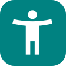

UX Designer based in the Bay Area
Designing accessible user experiences at the intersection of empathy and tenacity

Hotline 2 Health
Industry: Healthcare
Empowering patients to effortlessly connect with healthcare providers

 Login Screen
Focus on: Accessibility
Rethinking the login process to work for everyone

Emcor Services
Industry: HVAC Automation
Graphics and Panel Assembly for building automation systems
APL NextEd
Industry: EdTech
Faculty registration and profile creation redesign
Process
Iterative design, testing, validation and continuous delivery
Empathetic
Insightful
Tenacious
Comprehensive
Discovery
Research, collaboration with stakeholders, competitive analysis are the foundation for my work.
Ideation
Working independently or on a team, I like to evolve my ideas through sketching, prototyping and testing.
Development
Feature prioritization along with Agile methodologies for solid builds that are deliverable at any stage.
Launch
Checks for requirements and running tests on functionality is important. Validating product with users is key.
About Me
One common thread throughout my life has been the attitude:"how can I help this person?" I like to create things that inspire people, and make it easier to live better.
Designer and Educator
I was practicing UX design well before I knew there was a name for it, both in classrooms and in personal interactions. This included an iterative mindset, gathering information and stakeholder feedback, and continually re-designing around input.
Since 2016, I've designed and built websites from soup to nuts for a range of clients. In these projects, I've worn many hats, and have managed and executed web and software projects from ideation to execution and delivery.
I've been fortunate to have worked with a variety of clients including e-commerce, EdTech, healthcare, finance, nonprofit, agency, and HVAC.
Currently, I'm looking to add value to an existing design team within a full time or contract-to-hire role. With a breadth of experience, I'm adaptable to just about any professional situation.


Prior to being a UX designer, I worked in a fast-paced digital media college as an instructor and lecturer. During this time, I taught audio editing, sound design, video production, and multimedia assembly. I still teach private lessons and perform locally from time to time.
My passion for design is centered around being able to bring value to others, because I am genuinely curious to know how best I can be of assistance.